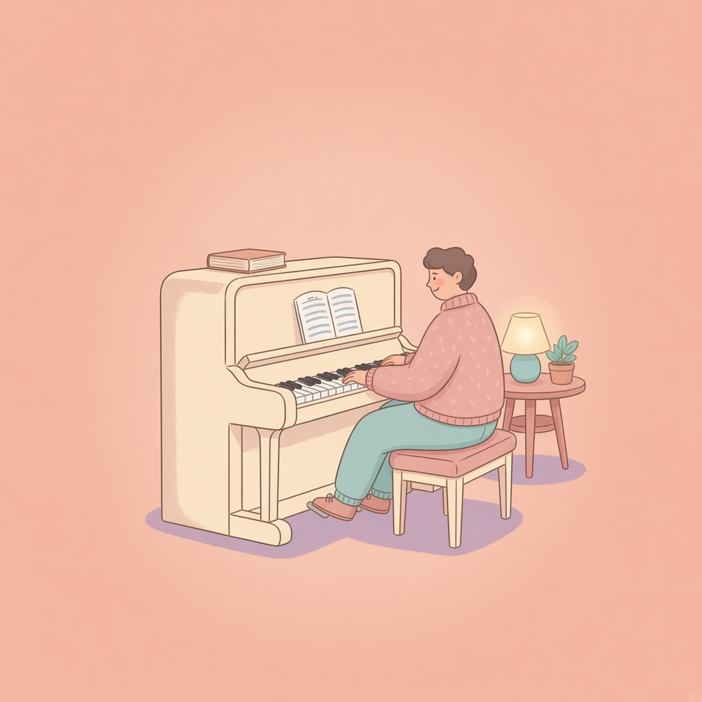
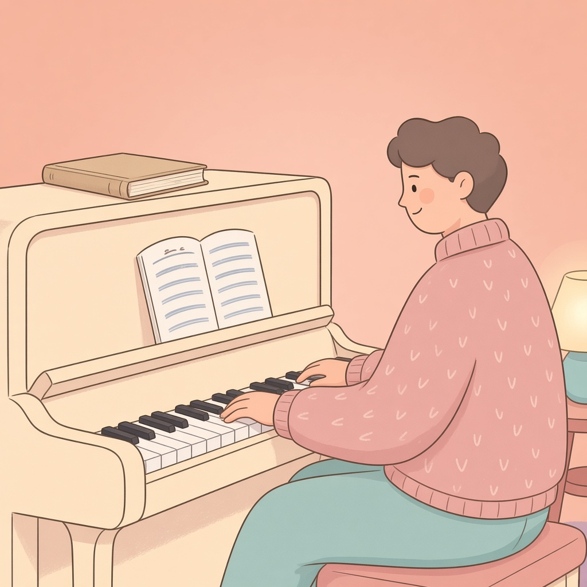

小時候學過鋼琴，長大想重拾，需要從頭開始嗎？

「三十歲重新學鋼琴，會不會太晚？」
小時候學過鋼琴、停了很久的人，有時會這樣問。
如果現在慢慢開始，往後的日子，就多了一個和鋼琴重新熟悉的機會。
有時讓人猶豫的，不只是年紀，而是不想面對自己彈得生疏的樣子。
如果你也有過這樣的猶豫，不妨讓自己從現在的樣子慢慢開始。還記得的繼續用，生疏的再慢慢找回來；至於從哪裡起步，可以和老師一起聊聊。
讓老師陪你一起找回手感
重新開始最難的，有時不是看譜或手指不靈活，而是承認：「我以前會，現在卻不太會了。」
明明知道停了很久，生疏很自然，坐到琴前時，還是難免拿現在的自己，和記憶裡的自己比較。
以前這裡不用想就能彈，現在怎麼一直停？以前彈過那麼多曲子，難道現在又要從簡單的開始？
如果你也有這種猶豫，可以先放下「要準備好才能上課」的要求。找出適合的起點，本來就可以是重新上課時，與老師一起討論的事。
你不需要先獨自練回某個程度，才去聯絡老師。那些「還記得一點，卻又不太確定」的地方，都可以成為討論的開始。
不是全部重來，也不必硬接以前的級數
「小時候學過」和「現在彈得順不順」，是兩件不同的事。
你可能還認得音符，卻需要時間找到琴鍵；也可能單手彈得出旋律，雙手一起就容易停頓。這不代表過去白學了，也不表示必須立刻接回以前的進度。
與其只問「以前學到第幾級」，更有幫助的是看看現在的狀況：
- 看譜時，是認音比較慢，還是節奏不熟悉？
- 單手能彈，還是雙手配合時容易卡住？
- 熟悉的曲子還記得多少，換一首新曲子又如何？
這些都可以作為討論起點的線索，不是報名前必須通過的測驗。
還熟悉的部分繼續用，需要複習的地方再補上。不一定要整套教材從頭重彈，也不必為了證明自己以前學過，勉強挑戰目前還吃力的曲子。
練一首簡單的曲子，也不是在否定以前的努力。它可以幫你重新熟悉琴鍵，慢慢找回雙手配合、把一段音樂彈順的感覺。

這一次，可以先說說你想彈什麼
小時候，你可能很少被問：「你想彈哪一首？」
長大後重新學琴，這個答案可以變得重要。
也許是陪你度過某段日子的歌，是和另一半一起看過的電影配樂，或只是某個晚上，讓你忍不住重播的旋律。
把那首歌帶給老師聽，說說你喜歡哪個部分，能讓學習方向更具體。
不過，想彈的曲子不一定適合直接當第一首練習曲，仍需要依目前程度，討論合適的版本、練習段落，或前面的準備。有了方向，也比較容易理解：眼前這些練習，和自己想彈的音樂有什麼關係。
喜歡的歌可以是方向，不必變成另一個催促自己的期限。
不必補完當年的進度，才能享受現在的學琴
重新開始，不必以追回那些年為目標。
把昨天卡住的小節彈順，也可以是值得高興的事。
這一次，你可以和老師一起討論自己想怎麼走。
不知道怎麼開口，可以先傳這三件事
如果你正在考慮重拾鋼琴，可以透過 LINE 告訴聽聽音樂郭庭羽老師：
- 小時候大約學了多久？
- 距離上次規律彈琴，隔了多久？
- 現在最想彈哪一首曲子？
也可以直接傳：
老師你好，我小時候學過鋼琴，但已經很多年沒彈了。現在想重新開始，最想彈的是＿＿，不太確定適合從哪裡開始，想先了解課程。
不記得以前用哪本教材也沒關係，照你記得的描述就好。
聽聽音樂位於台北中山區、近行天宮站。先聊聊你的狀況與想法，再討論適合怎麼開始。你想彈的那首歌，也可以一起帶來聊聊。
快速重點
- 不必先獨自練回某個程度，才去聯絡老師。
- 小時候學過，和現在彈得順不順，是兩件事。
- 還熟悉的部分繼續用，需要複習的地方再補上。
- 想彈的歌可以是方向，不必變成催促自己的期限。
- 先說學了多久、停了多久、最想彈哪一首就好。
想重拾鋼琴的話，可以用 Line 先跟郭庭羽老師聊一聊。
用 Line 先聊聊